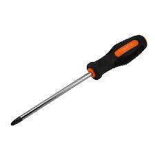

Maceta hecha de monitor
Materiales
-  destornillador
- planta
- tierra negra
 monitor
monitor
Instrucciones
- primeramente desarmamos el monitor con el destornillador
- luego ponemos la planta
- y al su rededor ponemos la tierra negra
- y ya esta listo nuestra maceta y no nesesita hecerle agujeros por que el monitor ya tiene agujeros